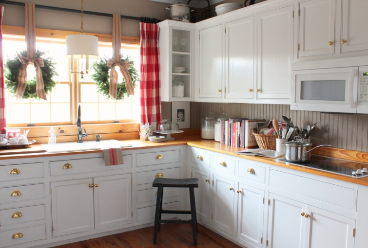

.png)
.PNG)
.PNG)
.PNG)
.PNG)
.PNG)
.JPG)
.JPG)
.PNG)
.PNG)



Christmas in the kitchen brings to mind dozens of happy moments…
Teenagers making whipped cream topped hot cocoa after attending a holiday concert …
Popcorn popping for a Christmas movie-watching marathon.
(The Santa Clause and Home Alone are usually among the first we watch. 🙂 )
Peppermint ice cream pie for dessert (just because we love peppermint at this time of year!) served with cappuccino made by a group of giggling nieces.
Then there are all those cookies and cakes that get prepared in the kitchen during the holidays for our friends and family (and Santa. 🙂 )
And don’t forget the delicious smells that come out of that room at Christmas…ginger and spices in Swedish gingerbread baked for a treat to enjoy by the fire on a cold winter’s night…the cinnamon and clove scents from hot Christmas punch that’s made for every single party of the season here, or the fruity smell of oranges mixed with those same spices for a cup of hot Christmas tea to sip while reading a holiday novel. (Have any of you read Shepherds Abiding this year?)
Yes, I dearly love Christmas in the kitchen, and I love love love decorating it for the season. From the fresh greenery wreaths in the windows to the little bottle brush trees sitting about, it is a fun space to fill with holiday touches.
And since our kitchen and dining area are one long room, I want to share what is on the other side of the island with you as well. For the last few years, I have decorated our kitchen and dining area with gingerbread houses to accompany our Christmas china, (Williams Sonoma Christmas Icons) but this year I wanted something different – something with even more of the childlike magic of the holiday. So what better place to find inspiration than a memory from my own childhood. I don’t have many specific memories of school from my childhood, but I do remember some of our Christmas decorating from way back then. (Pretty sad for an elementary school teacher to admit, right? LOL) I’ve mentioned before my love for this cracked and worn Santa mug that I have enjoyed for many Christmases since I was a little girl.
So when I saw these on sale at the Pottery Barn Outlet, I knew exactly what I wanted to do for the kitchen and dining area this year.
Santa Claus, the North Pole, reindeer, and sleigh bells from his sleigh all came together for the dining table.
I even carried the whimsy to reindeer names on tags with sleigh bells tied to the napkins. 🙂
The centerpiece is Santa’s red sleigh (thanks Louvina 🙂 ) filled with holly from our yard. It is sitting on a red platter (from Target) in a layer of snow sugar.
The built in cabinet has a wreath that matches those in the window.
Santa cookies are in the jar.
I did not use the gingerbread houses in jars this year. Instead I found a sparkly red Santa and two reindeer ornaments at Target to stand in the sugar snow.
Let me turn on the light so you can see them better. 🙂
(Santa came holding a white tree, but I changed it out for one of the green ones I had.)
And now for another childhood memory. 🙂
A few weeks ago I shared with you that I grew up in a home that sat in a pecan orchard, and each fall we would pick up the nuts that fell from those trees. After selling bags and bags full of them, my father would always save out some that he would crack for our family, and then my mother would use some of those nuts at Christmas. The one food I clearly remember my mother making at Christmas was divinity. I do not remember her making it at any other time of the year – it was a Christmas-only treat. But even though she made it every year, I never learned how to prepare it. (Yes, I know…shameful.) But the other day, she graciously came over to teach me how to make it. (Thanks Mom!) Here is her recipe with a few tweaks. We increased the eggs to 3, the vanilla to 1 teaspoon, and doubled the pecans to 1 full cup.
I wanted to show you photographs of all the steps involved in making it, but this post is already toooooo long.
So here is a photo of the finished candy…
and next week I will do the post on how to prepare it. 🙂
And that wraps up my Christmas in the Kitchen. If you have come from one of the other blogs participating today, welcome to our home! I am so happy you are here! 🙂 And if you are one of the regular readers here, I thank you for your frequent visits. I know you will find some delightful things at the other blogs on our tour today. So hop over to them and enjoy!
Click on the banners below for a link to their Christmas kitchens.
We hope our Christmas kitchens have given you a little holiday cheer, some decorating ideas, and perhaps a new recipe to try out this weekend.
One final thing before I go…don’t forget the giveaway going on here for 2 wonderful cookbooks and a $25 gift card for you to spend at Williams Sonoma. (More ways to enjoy Christmas in your kitchen!) You can find out all the details here. Just leave a comment to be entered, and remember the entry period closes at midnight Eastern time, Saturday December 13, 2014.
Thank you so much for visiting today.
Merry Christmas!

***giveaway has closed***


.PNG)
I also LOVE the soup tureen in this post!! Where do you get all your tureens?
Bless and thank you for sharing!
What a beautiful kitchen? Do you know what you call that color of your kitchen walls? Its so subtle, but highlights all of the accents perfectly!
I know Christmas has passed, but I love this post and all your beautiful photos!
My little boy said to me last week how much he missed Christmas. I have to admit that I do, too! But it’s nice to see your Christmas decor. You do a really spectacular job!
Thanks so much!
Do you know the name of the buffalo check fabric your drapes are made from? I am looking for something as close to them as possible.
Thanks, Heidi
——————————————————————–
Hi Heidi!
It is the 4 in. red check available from Forsyth Fabrics: http://forsythfabrics.com/collections/checks-plaids-houndstooth/products/4-check-red
Hope this helps!
Kelly
I found your blog today from Pinterest -I love your Christmas kitchen and dining room. And I’d like to enter your giveaway, thank you!
I hope you and your father-in-law start to feel better! Congratulations to your son!!! How exciting. Thanks for sharing the music and all the pretty things on your blog. We are turning an unused room into a game room. The room has been used as a junk room for way too long and now we are decluttering so we can get things switched around, which means that every other room is becoming messy. Before I head to bed tonight, I need to straighten up the other rooms before it gets too out of hand. Then, re-watching the Hobbit movies so I can go see the new one… It’s been a fun weekend!!! Best to you and your family. Merry Christmas!!!
What a beautiful kitchen! I love the Santa mugs and the wrapped napkins. I alo would like to try making the candy.
Merry Christmas, Kelly
Your kitchen looks lovely – I can’t imagine where you find the time and the energy to accomplish all of this! Hope you are feeling better.
Kelly, as always, you make me smile! Love the traditions, my favorite part of the holiday! While you had divinity, we had Potitcia, from my grandmother’s Yugoslav history. Kind of bread, filled with pecans (or walnuts), honey, cream and butter, then rolled into a log, shaped into a wreath and baked. It was HUGE, and wouldn’t be Christmas without it. I had planned to make it this year, but guess what – I too got pneumonia, so rest is all I can do. Boo! Haven’t even got the tree up yet, it will wait until Sat. when my daughter arrives from Texas. She doesn’t know how much work I have planned for her!
Have a very Merry Christmas!
Your kitchen looks so festive! 😉
I love divinity but have never mad it, either. Maybe after your divinity post I’ll give it a try,
Thanks for the recipe! I’ve always wanted to make Divinity. We use to have an elderly lady who brought it to a sewing group for years. Unfortunaltely she has passed now. We miss her and none of us know how to make it! It will be like she’s there with us again. Merry Christmas!
Thank you for letting us spend Christmas in your kitchen. Everything is so perfect! I can’t wait for the divinity details. I plan to give your recipe a try next week. The give away items are terrific and so generous, just like you are with your decorating ideas and recipes. I must say that your photos are terrific, much better than those in magazines and so inspirational. I agree with the other comments that your blog is truly one of the best.
Your kitchen looks wonderful and I love your Santa table. I’ve been crushing on Santa mugs….old and new….for years! And your little reindeer name cards….too cute! My heart sunk when you said no gingerbread houses this year, but I love the Santa and reindeer too!
I tried your Christmas punch last year and I’m making it for a party again tonight.
I didn’t get a chance to comment on your last post, but congratulations on being chosen for the BH&G Christmas magazine. That is so exciting. I will wait anxiously to see your house in print. And hopefully you will be feeling 100% again by the time the shoot rolls around in January. Things always work out the way they’re supposed to even though it’s not always planned that way.
Thanks for sharing your kitchen with us Kelly!
Hi Kelly,
This year my kitchen time is limited since we are moving into a different house. I am interested in the wicker chair you have in your living room. Has it been comfortable? Is it the small or the larger size? I am considering purchasing one or two for the new house. Would you recommend them? Thanks so much for your thoughts.
Bobbie Allgood
Omaha, Nebraska
I too love the kitchen at Christmas. I do so much baking that there always seems to be a cloud of flour dust in the air. Your kitchen is so beautiful and I love your table arrangement. Can’t wait to check out the other blogs.
I love love love your kitchen! The touches of red are just gorgeous and so cozy. Thanks for the chance to win! Merry Christmas!
Boy, does Divinity bring back memories of Christmases past. My great aunt used to make this every Christmas and I had the privilege of helping her. Of course, there wasn’t much a 6 year old could do, but I tried. Unfortunately, I have never been able to make good Divinity and now that Aunt Lena is gone, I doubt I ever will. It must have been the love she put in it that made it so special to everyone in our family. Can’t wait to see the photos you post about making this treat. I love Divinity.
So fun! I loved all of the kitchen decorations. Vintage Santa mugs are my favorites. I also still have a small one from my first grade teacher.
I want to copy your kitchen and dining room… every single detail. Your house has to be my fave of all the blogs I read!
Oh, your Christmas kitchen is delightful!! The red sleigh and red sparkly Santa are just fabulous…any chance you can tell me a source for them?? Your jar-fillers combined with your endless creativity never cease to amaze me.
Praying you’re continuing to regain your strength at this busy time…hope you have a pleasant weekend, Kelly.
Kelly,
Divinity is my Mom’s number one remember Christmas treat too! Thanks you for the wonderful recipe. I am going to have to make it for her using your modified recipe! I never learned how to make it before my Grandmother passed on. Your kitchen looks wonderful as usual. Thanks for sharing it with us. My favorite part is the naughty/nice caffeinated/decaffeinated tags on the coffee.
I’m going to have to give that divinity recipe a try. It is making my mouth water!
Your kitchen / dining area looks so warm and welcoming! I’m always pleasantly surprised at all of your different ideas and takes on setting such gorgeous tables! Everything looks wonderful!
Kelly!!! As always, absolutely beautiful! Like many others have said, the Santa mug made me smile. I love the jars with Santa and “snow” I am going to try to replicate that. I had to laugh when I saw the snow (sugar) on the platter with the sleigh…..try that in a few years when your grandchildren are around. My grandmother always made divinity and I have a sister-in-law who is a pro at it, but I have not had much success and have not tried to make it in years. I am always so impressed with all you accomplish, I hope you are feeling better and not overdoing.
I love the Santa cups. We had similar ones when I was a child and there were always candy canes in them. When I first got married, I found some at a store to put on my mantel, along with garland, lights, etc. We had just had our fireplace installed and we didn’t know that the builder did not securely secure the mantel. We found out one evening. While washing dishes after dinner, we heard a loud crash…ran to the living room to see the mantel and all of our Christmas decorations smashed on the floor. I was in tears over losing those little Santa cups. I was so hurt I’ve never been able to bring myself to purchase any replacements….but looking at yours makes me smile! 🙂 Thank you.
Will you please come to my house and spin your Christmas magic? PRETTY PLEASE!! I am blown away by your creativity!!
So Pretty! The red and white looks great. I have a question I’ve wanted to ask for a while. Where did you learn to do your beautiful lettering on all your chalk boards or is that just a natural talent? Beacuase I am always in awe!
My favorite part is the Santa sleigh with greenery for the centerpiece. The Santa and the reindeer in the jars with “sugar snow” are pretty cool too!
Kelly,
Your kitchen is so warm and welcoming everyday, but it is magazine worthy at Christmas! I loved everything you’ve shared. My grandpa used to make divinity when I was growing up. What a fond memory.
Karen
Your kitchen is beautiful. Your photos inspire me, as in I should get up off my behind, stop ogling blogs and do some decorating!!
Kelly, I am totally in love with your red checked curtains! Everything looks so bright and cheery, totally in the spirit of Christmas. I’ve really enjoyed your tour, and may have to go add more red to our own kitchen over here. Merry Christmas! xo Lidy
Kelly, love your Christmas kitchen. So many cute touches. I love cute sleigh. Great idea with the sugar. I have a small sled I may have to add some sugar! The holly from your yard is incredible. It is so perfect, I thought it was artificial. Beautiful!
Great job, Kelly. I don’t normally go for red in decorating, but it all looks fantastic and fresh.
I am so glad you like to decorate your kitchen, because I LOVE this post as well as all of your decorating! You’re a gifted & talented lady as well as an inspiration. Merry Christmas in the Kitchen!
Love, love, love Christmas in the Kitchen. I can come over anytime to sit at your table and enjoy some hot chocolate and visit with you:)
First time on your blog! Beautiful decor–loved it.
Hi Kelly, Love, Love, Love everything! Thanks for sharing your decoration with us. You are so talented. Where did you find the little sleigh? It is too cute. Thanks for a great blog, Anne
pure and lovely………nothing more needed to be said!
Kelly, Your red and white theme never fails to lift my spirits.
You have a way of coupling new and old and natural things in a way that is fresh and functional. Holidays at your home must be wonderful.
Hi Kelly, Your kitchen is lovely and I’m so glad you have so many lovely traditions that center around such a welcoming room. Thank you for sharing your wonderful home with us. Happy Holidays!
Kelly,
Mrs. Claus could not have a more inviting kitchen. The wreaths on the built-in, over the kitchen windows, the tablescape, sugar for snow, now that’s a great idea for the kitchen..sugarplums dancing in my head now with inspiration. My decorating is done except for the kitchen. I always save it for last and now I am glad I did! Please don’t tire of the oooohs, and aaaahs, because we, your readers, can’t help but SWOOOOOON! Thank you for including those little special touches..ribbon of bells on the plate rack. I love it! Have a holly jolly weekend!
Sherry
I can’t wait to head over and tour the next homes on the list! Love this idea!
Ooooohh!! I want to come to your house for Christmas, but I guess I could settle for the cookbooks. Hope you and your family have a very blessed Christmas.
So glad you did the Christmas in the Kitchen post! As much as I’ll enjoy seeing your home in the Christmas Ideas magazine, that’s a whole year away! 🙂
I love re-reading Shepherd’s Abiding this month, and I always squeeze in Rosamunde Pilcher’s Winter Solstice, too. Have a great weekend!
I always love all of your red touches!! It looks so festive. I always add red to my kitchen during the holidays. I love the sleigh used as your centerpiece too. I have an old brass Home Interior sleigh I need to spray paint and use this way too! thanks for the inspiration. Also, thanks for the divinity recipe. I have wanted to make some and have been looking at recipes this week. I think I’ll use yours since it is tried and true!! Now, to watch the weather report next week. 😉 And your post! 😀
I remember having a santa cup when I was a little girl, but have no idea what happened to it. Your santa cups made me smile. I also love the idea with your reindeer name tags, very cute!
Merry Christmas!
Always love your decorations!
Lovely kitchen! Sometimes a change gives a big Ahhh!.
You put so much in your home for the family. This is bright and colorful yet simple. The decorations have a real purpose.
Merry Christmas to you and yours.
SWEET!! So much fun to come into your kitchen! LOVE the table setting with the holly berries in the RED sleigh! Going to try that candy recipe– wish me luck– have never mastered candy making. So stepping out of my comfort area– but that’s how we grow, right? Will visit the other blogs during the weekend– what a great collaboration! Happy Friday– 🙂
Hi Kelly,
I’ve always wanted to learn how to make divinity. I also try every year to make old fashioned fudge. I like the hard break apart kind that cooks on the stove but I can never make it like my mom. Wonderful to learn these things from our moms. This Christmas will be really difficult for our family. We lost my Dad Nov. 24. The holidays will be sad but we’ll try to fill them with the memories shared with him.
Blessings,
Lisa
Yes, the kitchen is the place to be at Christmas – and yours is just gorgeous! I love all the red and all your pretty pieces!
Shelley
Perfectly lovely kitchen!!! Lots of inspiration!!! I always enjoy your blog posts!!
Thanks for the chance to win. Merry Christmas!!!
Love the Christmas kitchen posts. I waited all week for them. Lovely!
You’ve set just the right tone–elegantly casual. Things I love: the bottlebrush trees, the red sleigh, reindeer name tags, the bells, your desk. And you’ve something for our senses: sight, sound, and smell. I’ve never made Divinity but will do so this year.
Simply gorgeous!
PS: we got hit with one of our infamous wind storms over night & it sounds like the Eastside (Renton, Bellevue) got hammered! Your sons will probably have a few stories to tell. We have our power back this a.m. Whew!
Oh Kelly, I love it all. Hope you don’t mind while I sit a spell in your kitchen at the breakfast counter and sip a cuppa and gaze around some for awhile…… Your home just exudes love, comfort, and care. May you be blessed with a wonderful holiday ahead, even though I know this one will be difficult not having your boys under roof now. I finally got our tree up yesterday. I chickened out on the flocking for our indoor tree. I think I will still do a small one this weekend though, for the outbuilding porch. Decorating continues here too. Ha, maybe I will be complete by a day or two before Christmas?? Ugh! Thanks again for all your fun inspiring posts. Merry….Merry…..
Those napkins tied with jingle bells and reindeer names! You are just too clever!
Kelly you are so talented. I love how all spaces work together and not compete with each other. Love the clean freshness of the table scape. The bells on the napkins are perfect. Lastly the jars with a deer & Santa are precious! Thanks for sharing your talent.
Kelly,
Your home décor is such an inspiration to me, all your rooms are decorated to perfection and so enjoyable. Hope you and your family have a wonderful holiday season.
What a fun find to go with your treasured mug ~ and since I’ve gotta have red, I think your home looks beautiful! I have a red putz house in one of “our” jars on my kitchen counter. 🙂
Just finished listening to “Sheperds Abiding” yesterday. There is something so enchanting about this book and listening while I bake for Christmas seems to heighten my experience.
I love how you change out your windows to the red and white checks at this time of year. I love your wood countertops that add such farmhouse warmth to the space as well. The red and white is merry and bright and makes me smile just to look at it. Love, love, love the table setting with those napkins and the reindeer tags are perfection. One of my favorite things are the glass canisters with the sugar snow and filled to the brim with Christmas vignettes. Merry Christmas!
Oh such a happy, homey room. I love the little details. The “naughty” and “nice” tags on the coffee cracked me up. I always love the silver and red you use. The silver sugar bowl with the candy canes and the red candles in the silver candlesticks…love them. Now, on to visit the other sites!!
Hi Kelly –
Your home always looks beautiful and even more so now that you added your holiday style. I love the ribbon garland with the jingle bells over the plate rack and can’t wait to make one for my own home now. I love the sound and can never have too many to jingle my way through the season.
Kelly, everything about your house is warm and welcoming. What a talent you have!!
I have several sets of those Santa mugs that my grandmother had back in the 1930’s and 40’s. You have inspired me to pull them out of the attic! Thanks, and Merry Christmas!
Merry Christmas Kelly!
I love your kitchen with all the touches of red; it is so festive. Red is my favorite color. The wreaths hanging on your windows are wonderful! Did you use burlap ribbon or chair webbing to hang them with?
I’m inspired! 🙂
Hi Kelly, your kitchen is gorgeous, I love red in the kitchen!! I have had my eye on the Pottery Barn Santa Mugs for my grandchildren, I think I need to go ahead and get them! I made your peppermint ice cream dessert last year and my family LOVED it, I will be making it again this year!
Kelly, I am loving all of the red and white. Everything looks truly amazing! I grew up with 8 pecan trees in the yard and fondly remember selling pecans with my brothers too.
xo, lissy
I can’t wait to hear how your divinity turned out. It sure looks delicious! My grandmother always made it at Christmas and we never learned how either. I am so glad you and your Mother got together and made it. A new tradition!
I had to come back and say I just read your Christmas tea recipe….it’s the one my mom made every year! She would make it and give it as gifts along with her wonderful homemade cookies (that I never got the recipe for)! I’m going to ask her today if she remembers how to make those cookies so I can keep that recipe in the family. My daughter loves to cook/bake and now Taylor is taking an interest in it too, which is about the age Shannon (daughter) was when SHE developed a love of cooking/baking.
I had forgot about that tea recipe so I’m glad I “found” it again…it made me think of how much love my mom put into making her tea and cookies for family and friends every year.
kelly, your Christmas kitchen is simply wonderful! I must try your Christmas punch and tea recipes…the last couple of years I’ve made my hot spiced cider so it will be nice to have some different drinks to try.
I hung some wreaths off my kitchen cabinets this year…something new to me but I love it! I’m hoping (against hope) to get a post up this week of my Christmas decorating since I haven’t even posted this month! But with the new baby due 12/30; spending time with my mama and just being busy, it’s been hard to even think about blogging.
I have to tell you….I was in a local $$Tree a few weeks ago and they had those Santa mugs along with Snowman mugs for $1.00 each! So I bought 3 of each for me and the same for my daughter….probably not the quality of PB but they look really cute!
I’m going to go ahead and wish you a wonderful and blessed Christmas season in the event I don’t get to visit with you beforehand.
xoxo!
Judy
WOW! Absolutely beautiful and fun. My mother used to make divinity too….but it had to be on a cold sunny dry day. if there was too much humidity, the divinity would be sticky. I think I will try it. Thanks for sharing recipe.
Your kitchen looks lovely, warm, and inviting. I can picture the happy times to come with your family. Love the name tags on the napkins–I’m copying that. Merry Christmas!!
Hi Kelly!
Your kitchen and dining area are beautiful! I love the red and white/Santa theme!! Always fun to see what you do in your home for the holidays!! Wishing we had a Pottery Barn outlet close by!! LOL I am enjoying the first book in the Mitford Series, thank you for your tips on reading them in order!! Hope you and your family enjoy the holidays and I am looking forward to making divinity with my mother this weekend!!
Blessings to you!
Jenny
Your table setting is absolutely gorgeous! I wish I had a Pottery Barn outlet nearby but we do not in Savannah. Thank you for your wonderful giveaway.
Love the Santa theme in your kitchen this year!! So cute and red is my favorite color!!
Oh thank you for these inspiring pictures to start my day. I love the ribbon and bells used on your napkins with the reindeer tags…. You are so clever! I want to eat a yummy meal in your pretty dining room!
Merry Christmas, Kelly!
Kelly, you always set the cutest tables. Love your hanging wreaths in the kitchen windows. Just added small wreaths, burlap ribbon, and bottle brush trees to my shopping list. Hope your school days are filled with Christmas plays, choirs, and a Christmas movie or two. Loved teaching the primary grades this time of year.